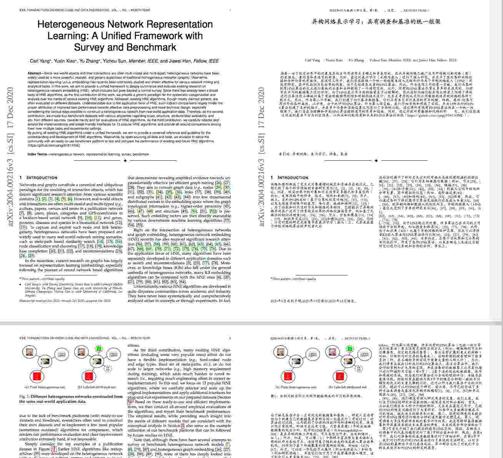

趣卡首页
趣卡学术
高保真翻译
趣卡翻译赞助版

趣卡翻译（9月16日后半夜-9月17日早上8：00服务器升级，无法使用请见谅！）
趣卡翻译是一款免费支持语料库的英文PDF翻译软件，能够生成英文—中文对照PDF:(1)可以帮助快速理解和阅读文献，加大文献阅读量，选出优秀文献用于精读。(2)更容易理解跨领域知识，拓宽视野，发散思维。 Windows操作系统需要满足64位，Macos最低的操作系统版本需要满足10.14.6。
Copyright © 2020-2021趣卡翻译_版权所有 All Rights Reserved.
备案：吉ICP备14004403号-1